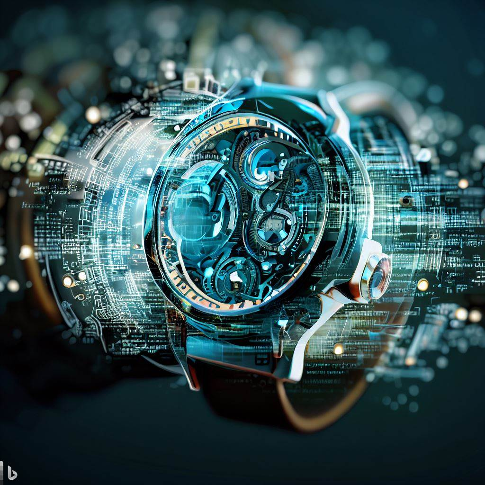
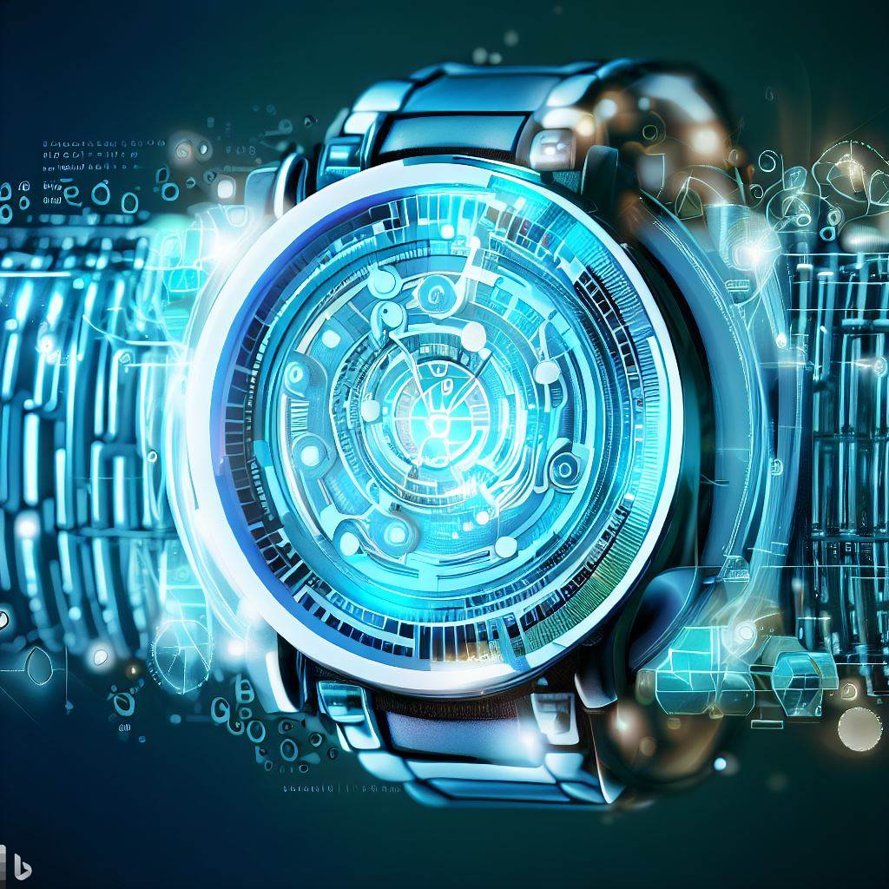
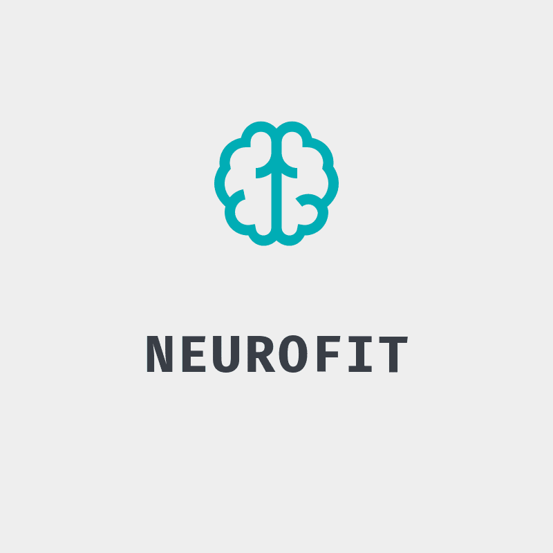

Revelado o HealthGuard Pro O Futuro da Saúde em Seu Pulso - Uma Inovação Tecnológica que Redefine o
Monitoramento Pessoal de Saúde!

O HealthGuard Pro foi desenvolvido com uma abordagem multidisciplinar e um
compromisso inabalável com a inovação tecnológica e o cuidado com a saúde. Seu processo
de desenvolvimento envolveu várias etapas complexas e colaborações estratégicas para criar
um smartwatch verdadeiramente revolucionário em termos de detecção de saúde. Aqui está uma
descrição detalhada de como o HealthGuard Pro foi montado:
1. Conceito e Pesquisa:
O processo começou com a definição clara do conceito - criar um smartwatch que fosse além do monitoramento
tradicional de saúde, detectando sinais de alerta precoce para uma variedade de condições. A equipe realizou
uma extensa pesquisa sobre tecnologias de sensores, algoritmos de análise de dados e tendências médicas
para identificar as melhores abordagens.
2. Engenharia de Hardware:
A equipe de engenheiros projetou o hardware do HealthGuard Pro para acomodar uma variedade de sensores avançados.
Isso incluiu sensores de frequência cardíaca de alta precisão, sensores de movimento para monitoramento de atividade
física, sensores de temperatura e outros sensores especializados para detectar parâmetros específicos de saúde.
3. Desenvolvimento de Algoritmos:
A parte crucial foi o desenvolvimento de algoritmos de detecção sofisticados. A equipe de cientistas de dados e médicos
trabalhou juntos para criar algoritmos capazes de identificar padrões sutis e anormais nos dados coletados pelos sensores.
Esses algoritmos interpretam os dados e geram alertas precisos para situações de risco à saúde.
4. Testes Clínicos e Validação:
O HealthGuard Pro passou por extensos testes clínicos para validar sua precisão e eficácia. Colaborações com instituições
médicas e médicos permitiram a coleta de dados reais de pacientes, comparando as detecções do HealthGuard Pro com diagnósticos
médicos para garantir alta confiabilidade.
5. Design de Software e Interface:
Além das capacidades de detecção, o HealthGuard Pro foi equipado com uma interface intuitiva e amigável ao usuário. A equipe de
design de software trabalhou para criar um sistema fácil de usar, permitindo que os usuários acessem dados sobre sua saúde e recebam
alertas de maneira clara e eficiente.
6. Parcerias Estratégicas:
A colaboração com centros de pesquisa médica e instituições de saúde permitiu a BioWatchGuard aprimorar ainda mais os recursos do HealthGuard Pro.
Parcerias com profissionais médicos garantiram que a tecnologia fosse clinicamente relevante e oferecesse insights valiosos.
7. Lançamento e Atualizações Contínuas:
Após a fase de desenvolvimento, o HealthGuard Pro foi lançado com sucesso no mercado. A empresa continua a investir em pesquisas e atualizações
contínuas para melhorar ainda mais a precisão dos algoritmos, adicionar novos recursos e manter o smartwatch alinhado com as últimas tendências de
saúde e tecnologia.
O HealthGuard Pro é o resultado da colaboração de equipes multidisciplinares, cientistas, engenheiros e profissionais médicos que trabalharam juntos
para criar uma inovação que está transformando a maneira como as pessoas monitoram e protegem sua saúde.
Apresentamos BioWatch Connect
A Conexão Inteligente entre Cuidados de Saúde Personalizados
O BioWatch Connect é um novo produto revolucionário que atua como um intermediário inteligente entre o HealthGuard Pro e o HealthSentinel, expandindo
ainda mais a capacidade de monitoramento e cuidados de saúde personalizados oferecidos pela BioWatchGuard. Esse dispositivo inovador combina as funcionalidades
de detecção avançada de problemas de saúde do HealthGuard Pro com a conectividade inteligente e as análises aprofundadas do HealthSentinel.
Principais Características:
1. Monitoramento Contínuo:
O BioWatch Connect mantém um monitoramento constante dos sinais vitais e parâmetros de saúde do usuário, garantindo uma visão abrangente do seu bem-estar.
2. Detecção Avançada:
Assim como o HealthGuard Pro, o BioWatch Connect é equipado com sensores de alta precisão que podem identificar uma variedade de problemas de saúde em estágios iniciais,
incluindo ritmo cardíaco irregular, níveis de oxigênio no sangue anormais e muito mais.
3. Conectividade Inteligente:
O dispositivo se conecta de forma contínua com o aplicativo móvel BioWatchGuard, permitindo que os usuários acessem seus dados de saúde em tempo real e compartilhem informações
relevantes com médicos e profissionais de saúde.
4. Análises Avançadas:
O BioWatch Connect utiliza algoritmos de aprendizado de máquina para analisar dados coletados e fornecer insights personalizados sobre o estado de saúde do usuário. Isso ajuda a identificar
tendências, padrões e possíveis áreas de preocupação.
5. Alertas e Ações:
Assim que o BioWatch Connect detecta qualquer problema potencial, ele emite alertas instantâneos para o usuário e, se necessário, oferece orientações sobre as ações a serem tomadas, como procurar atendimento
médico ou ajustar o nível de atividade física.
6. Integração Total:
O BioWatch Connect também se integra perfeitamente com os sistemas de acompanhamento e gerenciamento do HealthSentinel, proporcionando uma visão completa da saúde do usuário para ele e seus médicos.
O BioWatch Connect representa uma nova era de monitoramento de saúde pessoal, combinando a detecção avançada de problemas do HealthGuard Pro com a inteligência de análise e conectividade do HealthSentinel.
É um intermediário inteligente que permite que os usuários se mantenham informados, tomem medidas proativas e estejam no controle de sua saúde, garantindo uma vida mais saudável e tranquila.
Apresentamos HealthSentinel
Detecção de Saúde Avançada ao Alcance de Todos - A Revolução Acessível no Monitoramento Pessoal de Bem-Estar!"

O desenvolvimento do HealthSentinel foi guiado por uma visão de tornar o monitoramento avançado de saúde acessível a
um público amplo, garantindo que a tecnologia estivesse ao alcance de todos. Aqui está uma descrição detalhada de como o HealthSentinel foi
criado, mantendo uma abordagem de acessibilidade:
1. Definição de Objetivos Acessíveis:
Desde o início, a BioWatchGuard estabeleceu metas claras para criar um smartwatch de detecção de saúde acessível. Isso incluiu a identificação de
recursos cruciais de detecção que poderiam ser incorporados de maneira eficaz, sem comprometer a qualidade do produto.
2. Seleção de Componentes de Custo Eficaz:
A equipe de engenheiros focou na escolha de componentes de alta qualidade, porém acessíveis em termos de custo. Isso envolveu pesquisa e parcerias
com fabricantes que ofereciam soluções tecnológicas eficientes sem aumentar significativamente o preço final do produto.
3. Otimização de Design e Produção:
O design do HealthSentinel foi otimizado para simplificar o processo de produção, reduzindo desperdícios e custos. Isso incluiu a escolha de materiais duráveis e eficientes,
bem como processos de montagem eficazes.
4. Desenvolvimento de Algoritmos Eficientes:
A equipe de cientistas de dados trabalhou para desenvolver algoritmos de detecção eficientes, que permitissem uma detecção precisa usando recursos computacionais mínimos.
Isso não apenas otimizou o desempenho do smartwatch, mas também reduziu o consumo de energia.
5. Testes de Usabilidade e Feedback do Cliente:
A BioWatchGuard realizou testes extensivos de usabilidade com usuários reais para entender suas necessidades e expectativas. Isso permitiu a identificação de áreas onde a
experiência do usuário poderia ser aprimorada, garantindo que o produto atendesse às demandas práticas dos clientes.
6. Parcerias para Economias de Escala:
A BioWatchGuard estabeleceu parcerias estratégicas para aproveitar economias de escala na produção e distribuição do HealthSentinel. Isso permitiu reduzir custos logísticos e de fabricação,
contribuindo para a manutenção de um preço acessível.
7. Lançamento e Educação do Cliente:
O lançamento do HealthSentinel foi acompanhado por esforços de educação do cliente, destacando os benefícios da detecção de saúde acessível. A BioWatchGuard enfatizou a importância de cuidados
preventivos e como o HealthSentinel poderia capacitar as pessoas a tomar medidas proativas em relação à sua saúde.
O HealthSentinel foi meticulosamente projetado para trazer uma abordagem acessível ao monitoramento de saúde avançado. A BioWatchGuard demonstrou que é possível fornecer tecnologia de detecção de
saúde de alta qualidade a um preço acessível, permitindo que um público mais amplo tenha acesso a insights valiosos sobre sua saúde.
Projeto NeuroFit da Aluna Alice Silva: Pioneirismo na Reabilitação Neurológica

O projeto NeuroFit nasceu de um encontro entre apaixonados pela neurociência, engenharia biomédica e tecnologia de saúde, todos movidos por uma visão comum: transformar a reabilitação neurológica
por meio da inovação tecnológica. A jornada começou com uma série de passos estratégicos e colaborações interdisciplinares, que eventualmente deram origem a um projeto que está revolucionando a forma
como a recuperação neurológica é abordada.
Passo 1: Identificação das Necessidades
O processo teve início com a identificação das lacunas existentes na reabilitação neurológica convencional. Membros da equipe, incluindo neurocientistas, fisioterapeutas e engenheiros biomédicos,
analisaram as limitações dos métodos tradicionais de reabilitação e reconheceram o potencial das tecnologias emergentes para preencher essas lacunas.
Passo 2: Formação da Equipe Multidisciplinar
Uma equipe diversificada foi formada, composta por profissionais de diversas áreas, como neurociência, engenharia, ciência da computação e medicina. Essa equipe tinha como objetivo trazer uma abordagem
abrangente e multidisciplinar para resolver os desafios complexos da reabilitação neurológica.
Passo 3: Definição de Objetivos e Metas
Com a equipe em vigor, foram definidos os objetivos claros do projeto NeuroFit: desenvolver tecnologias inovadoras que pudessem melhorar a recuperação neurológica, aumentar a eficácia da reabilitação e
proporcionar maior autonomia aos pacientes.
Passo 4: Pesquisa e Desenvolvimento Tecnológico
A pesquisa científica desempenhou um papel central no desenvolvimento do NeuroFit. A equipe mergulhou em estudos de neurociência, análise de dados clínicos e revisão de literatura para entender profundamente as
necessidades dos pacientes e identificar as tecnologias mais promissoras.
Passo 5: Design e Prototipagem
Com base na pesquisa, a equipe começou a projetar e prototipar as tecnologias do NeuroFit. Isso incluiu a criação de interfaces cérebro-máquina avançadas, dispositivos de reabilitação neurosensorial e algoritmos
de aprendizado de máquina personalizados. O design teve em mente a usabilidade, adaptabilidade e segurança para os pacientes.
Passo 6: Ensaios Clínicos e Validação
A próxima etapa foi conduzir ensaios clínicos rigorosos para avaliar a eficácia e a segurança das tecnologias NeuroFit. A colaboração com instituições de saúde e centros de reabilitação foi crucial para testar as tecnologias
em um ambiente real e coletar dados objetivos sobre sua eficácia.
Passo 7: Implementação e Parcerias
Com resultados positivos dos ensaios clínicos, o NeuroFit começou a ser implementado em instituições de saúde e centros de reabilitação. Parcerias estratégicas foram formadas para garantir que as tecnologias fossem acessíveis a um
público mais amplo de pacientes.
Passo 8: Pesquisa Contínua e Inovação
O projeto NeuroFit não parou na implementação inicial. A equipe continua a conduzir pesquisas, desenvolver atualizações tecnológicas e colaborar com especialistas em saúde para aprimorar e expandir as soluções oferecidas pelo NeuroFit.
A jornada de criação do projeto NeuroFit é um testemunho da dedicação, colaboração e paixão da equipe por melhorar a vida das pessoas afetadas por condições neurológicas. Desde sua concepção até sua implementação, o NeuroFit continua a se
destacar como um exemplo de como a inovação pode transformar a reabilitação neurológica e proporcionar esperança a muitos.